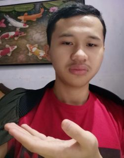

| Biodata | Data Diri |
|---|---|
| Name | Daniel Rivalsyah Handoko |
| Kelas | XI-1 |
| Nama Panggilan | Danil |
| Tempat, Tanggal Lahir | Cianjur, 19 Januari 2003 |
| Agama | Islam |
| Asal Sekolah | Smp Negeri 1 Cipanas |
| Alamat | Cipanas, Jln Pasir Kampung Gg Hote no 27 RT 001 RW 014 |
| Hobi | Membaca Novel atau cerita yang menyenangkan |
| Pengalaman | Belajar online sangatlah jenuh, sehingga materi terkadang menjadi sulit dipahami karena kurang motivasi, karena itulah pengalaman saya belajar online adalah segala sesuatu menjadi sulit dikerjakan dan berpikir bahwa belajar disekolah lebih efektif karena ada rasa motivasi. |